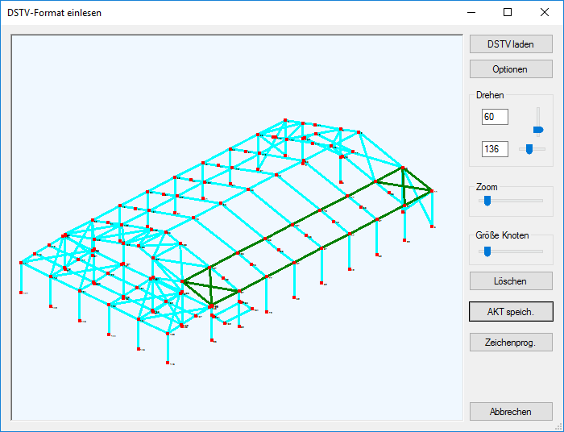
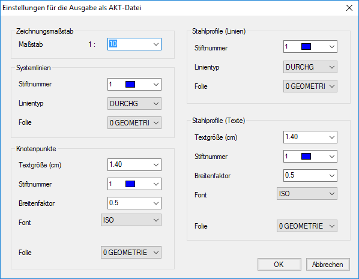

.png)
Windows-Startmenü → Programmgruppe ISBCAD 2026 → Hauptmenü → DSTV Import
Öffnet den Dialog DSTV-Format einlesen.
Aus bestimmten räumlichen Stabwerks‑Statik‑Programmen, u. a. RStab von Dlubal oder RST von Frilo Software GmbH etc. können die ermittelten Stahlprofile in ISBCAD übertragen werden. Aus der Übersicht werden durch Anklicken von drei Punkten einzelne Ebenen herausgeschnitten, die in ISBCAD maßstabsgetreu abgebildet werden. Jede ausgewählte Ebene wird in einer eigenständigen AKT-Datei gespeichert. Wenn Sie alle Ebenen extrahiert haben, können Sie diese in ISBCAD einfügen und zu einer kompletten Zeichnung zusammenstellen. Siehe: » Datei einfügen; [Datei | Einfüg].
Die einzelnen Knotenpunkte werden nach dem Einfügen in ISBCAD nicht angezeigt. Für die spätere Darstellung der Knotenpunkte wird ein Freiraum erzeugt. Das Konstruieren inkl. Nachweis erfolgt am schnellsten mit den Stahlbauvarianten [Option | StahlV].
|
Tipp: |
|
Bevor Sie die Konstruktion in ISBCAD weiterbearbeiten, ist zu überlegen, ob ggf. übereinanderliegende Linien entfernt werden sollten. Nutzen Sie für das Entfernen der Linien die Funktion Übereinanderliegende Linien löschen. [Konst1 | FenÄnd → ÜLösch]. |

Optionen im Dialog "DSTV-Format lesen"

Verändern Sie die Größe und die Ansicht so, dass drei Punkte einer Ebene eindeutig unterscheidbar sind. Klicken Sie die entsprechenden Punkte an, um die Ebene zu markieren.
Verwenden Sie für das Verändern der Konstruktionsdarstellung die Schieberegler Drehen, Zoom und Größe Knoten, um die Perspektive, Vergrößerung und Größe der Knoten einzustellen. Alternativ können Sie die Konstruktion mit gedrückter linker Maustaste und dem Scroll-Rad ausrichten.
DSTV laden
Öffnet einen Dialog zum Einlesen einer STP-Datei (*.stp). Suchen Sie die Ergebnisdatei heraus, aus der Sie die Profile übernehmen wollen.
Optionen
Öffnet den Dialog Einstellungen für die Ausgabe als AKT-Datei.
Im Dialog können Sie die Grundeinstellungen für die Darstellung der Konstruktion in ISBCAD vornehmen.
 Zeichnungsmaßstab Stellt die Konstruktion mit dem hier eingestellten Maßstab in ISBCAD dar. Wenn Sie die Zeichnung eingefügt haben, können Sie den Maßstab ggf. noch ändern. Abfrage [M=1]. Systemlinien Darstellung der Systemlinien der Konstruktion. Knotenpunkte Darstellung der Knotenpunkte- und nummern sowie Angabe der Zielfolie. Stahlprofile (Linien) Darstellung des Stahlprofils der Konstruktion und Angabe der Zielfolie. Stahlprofile (Texte) Darstellung der Texte und Angabe der Zielfolie. |
Übernehmen Sie im Dialog die Änderungen mit OK oder verwerfen Sie die Angaben mit Abbrechen.
Löschen
Hebt die Markierung auf.
AKT speich.
Speichert die aktuelle Ebene in einer AKT-Datei. Um mehrere Ebenen auszuwählen, speichern Sie jeweils nach dem Anklicken von drei Punkten die Auswahl durch AKT speich. Für jede Ebene müssen Sie eine separate Zeichnung anlegen.
Mit dem Aufruf des Zeichenprogramms wird die Ebene im Konstruktionsprogramm dargestellt.
Zeichenprog.
Öffnet einen Dialog zum Speichern der akt-Datei. Nach dem Speichern wird die zuvor markierte Ebene in ISBCAD geöffnet.
Abbrechen
Öffnet einen Dialog zum Speichern der akt-Datei. Wenn Sie im Speichern-Dialog auf Abbrechen klicken, wird der Dialog DSTV Import geschlossen.